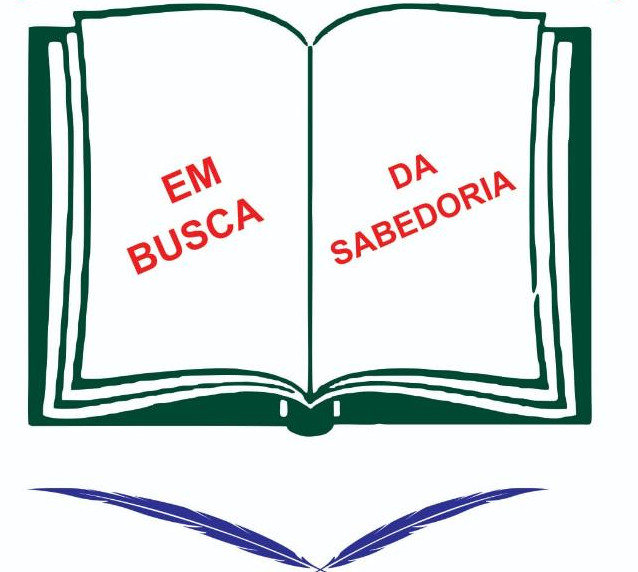

E.M.E.F Prof° Izabel Barral

Funcionários
Bem-vindo à nossa página dedicada aos incríveis profissionais que fazem parte da equipe da nossa escola. Aqui, celebramos a diversidade de talentos, paixões e dedicados esforços que cada membro da nossa equipe traz para enriquecer a experiência educacional dos nossos alunos.
Nossos funcionários são mais do que simplesmente educadores; eles são mentores, guias e modelos a seguir. Com uma vasta gama de habilidades, experiências e personalidades, cada membro da nossa equipe desempenha um papel único e significativo no apoio ao crescimento acadêmico, emocional e pessoal dos nossos alunos.
De diretores visionários a professores apaixonados, e do pessoal administrativo diligente aos funcionários de apoio que mantêm nossa escola funcionando sem problemas, cada indivíduo desempenha um papel essencial no tecido da nossa comunidade escolar.
Navegue pela nossa página para conhecer melhor os rostos por trás da nossa escola, descobrir suas histórias inspiradoras e aprender mais sobre como cada um deles contribui para tornar nossa escola um lugar vibrante de aprendizado, crescimento e sucesso.
Direção
- Diretor: Cristiano
- Vice-Diretora: Leidiane da silva silva
Coordenação
- Claudete Carneiro
- Selma Cristina da Costa Egoshi
- Sheila Maria
Secretária
- Glaucia Chaves
Professores
- Admilson César - Mátematica
- Daniel - Matemática
- Leandro Morais - Ens. Religioso e artes
- Edi carlos- Artes
- Carlos André - História
- Francisco - Lingua Portuguesa
- Francinaldo - Língua Portuguesa
- Waldir Soltenes - C.F.B
- Romilson - Geografia
- Edithe Nobumassa - Geografia e Est. Amazônicos
- Karina Bostton - Ed. Física
- Paulo TRindade - Inglês
- Silgle Quaresma - A.E.E
Apoio-Secretária
- Rosa
- Fabiane
- Ivana
- Laércio
- Antõnio
Apoio-Serventes
- Raquel Mariane
- Elizangela
- Maria
- Cristina
- Izabel
- Jaci
- Tiana
- Lindalva
Apoio-Vígia
- Benevenuto Burralho
- Silvio
- Milguel
- Raimundo
Na nossa escola, valorizamos profundamente o compromisso, a dedicação e a expertise de nossa equipe de profissionais. Cada membro desempenha um papel fundamental no ambiente de aprendizagem e no desenvolvimento dos nossos alunos. Estamos orgulhosos de contar com uma equipe tão talentosa e dedicada, comprometida em proporcionar uma educação de qualidade e moldar o futuro de nossos jovens. Juntos, trabalhamos em harmonia para criar um ambiente acolhedor, inclusivo e inspirador, onde cada aluno pode alcançar seu pleno potencial. Agradecemos sinceramente a todos os nossos funcionários por seu trabalho incansável e pelo impacto positivo que têm em nossas vidas e comunidade escolar.